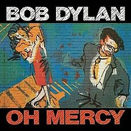

Toggle navigation
Bob Dylan Lyrics
Downloads
All Songs
1960s
Bob Dylan
The Freewheelin' Bob Dylan
The Times They Are A-Changin'
Another Side of Bob Dylan
Bringing It All Back Home
Highway 61 Revisited
Blonde on Blonde
Bob Dylan's Greatest Hits
John Wesley Harding
Nashville Skyline
1970s
Self Portrait
New Morning
Bob Dylan's Greatest Hits, Volume II
Pat Garrett & Billy the Kid
Dylan
Planet Waves
Before the Flood
Blood on the Tracks
The Basement Tapes
Desire
Hard Rain
Street-Legal
Bob Dylan at Budokan
Slow Train Coming
1980s
Saved
Shot of Love
Infidels
Real Live
Empire Burlesque
Biograph
Knocked Out Loaded
Dylan & the Dead
Down in the Groove
Oh Mercy
1990s
2000s
2010s
Oh Mercy

Released: September 18, 1989
Length: 38:46
Producer:
Daniel Lanois
Label: Columbia
By Bob Dylan
Side 1
Political World
Where Teardrops Fall
Everything Is Broken
Ring Them Bells
Man in the Long Black Coat
Side 2
Most of the Time
What Good Am I?
Disease of Conceit
What Was It You Wanted?
Shooting Star